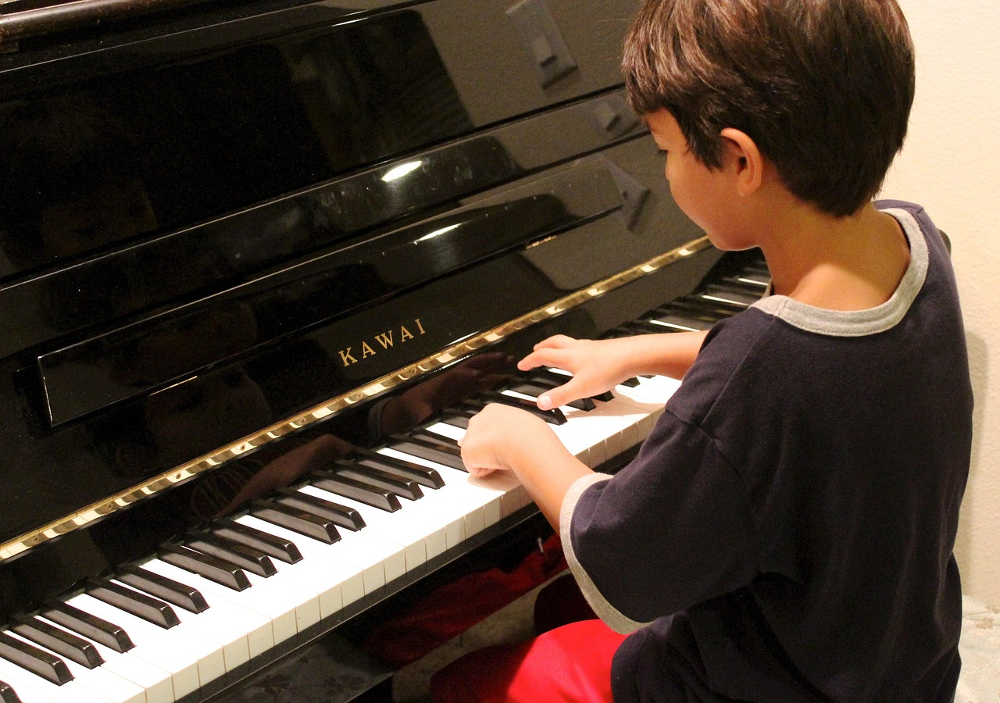

My current work experience:
Piano Teacher (2005 - present)

My passion is helping students of all ages discover the joy of making music. Whether someone is touching piano keys for the very first time or refining their artistic expression, I love creating a warm, encouraging space where they can build confidence, master their technique, and fall in love with playing.
Assembly Lead at SALTT and Keto Chow (2026 - present)
I find satisfaction in directing precision assembly, packaging, and quality control workflows in a fast-paced production environment. This role combines hands-on manufacturing with leadership, ensuring high standards of efficiency, quality, and smooth daily operations.